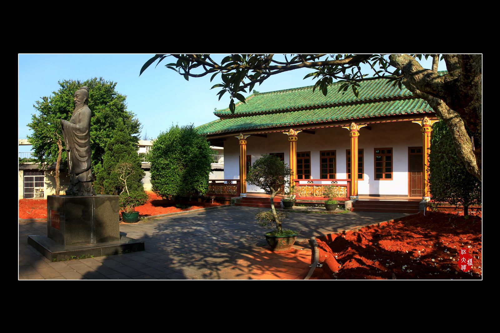

从一所新学校开始
私立琼海中学创办，钟衍林担任首任校长。
01A SCHOOL. MANY WORLDS.
从1923年出发，在一座热带岛屿上，继续生长。沿着史料与校园手图，认识府城。

FUCHENG CAMPUS / HAIKOU海
一所学校的历史，不只在纪念册里。它也在每天都会经过的门、廊、树和水边。
海南中学前身为1923年创办的私立琼海中学。本站聚焦府城校区，以公开资料和既有校园空间数据为基础，探索一种更有温度的数字校园表达。
前往海南中学官方网站 ↗02MOMENTS IN TIME / 历史的页边
私立琼海中学创办，钟衍林担任首任校长。
学校迁至府城西门外大路街一带，开启此后漫长的校园记忆。
海南建省后，学校定名为海南中学。
衍林堂前的“春风化雨——钟衍林和学生们”铜像，记录师生同行的意象。
百年校庆相关报道回望学校的创办与发展。
历史节点沿用原仓库依据学校简介、海南日报及政府网报道整理的资料；可在新闻档案中查看原文链接。
03A FIELD GUIDE / 校园空间
选一个地点，展开手记。
也可以在3D校园里亲自抵达。